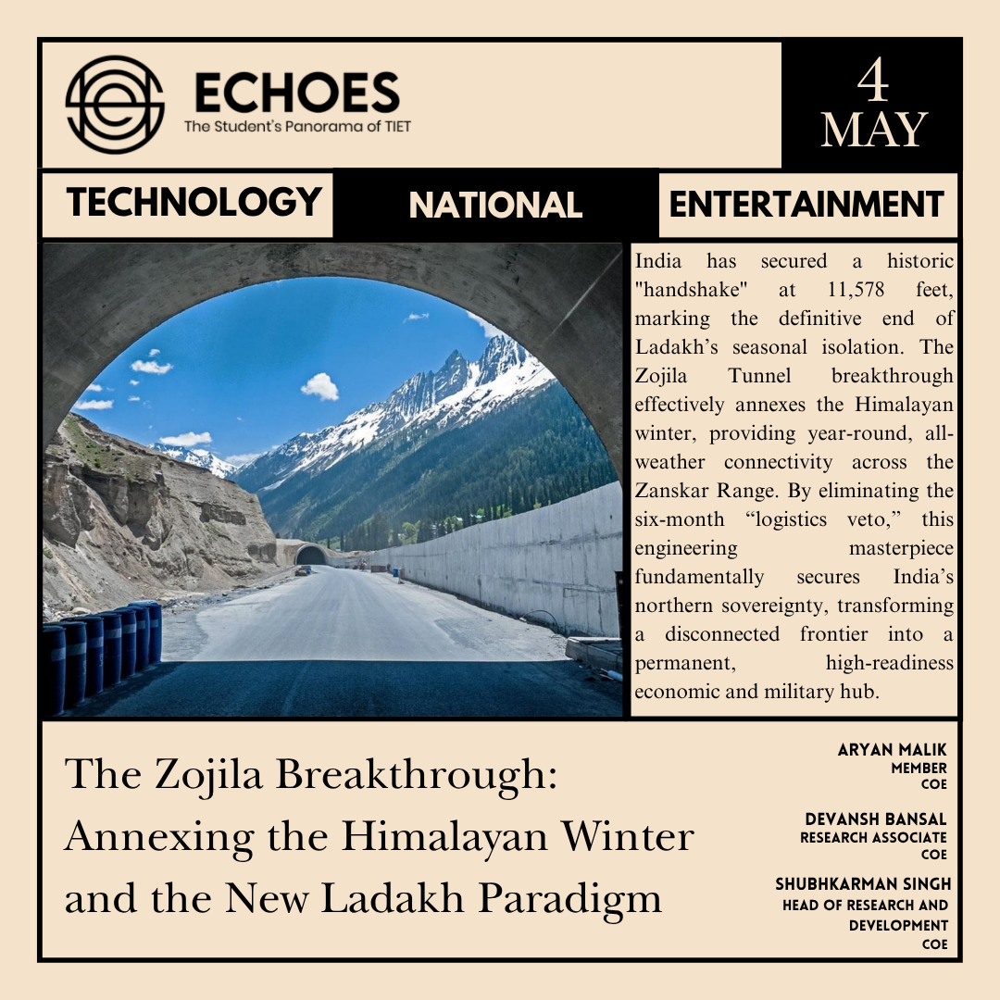
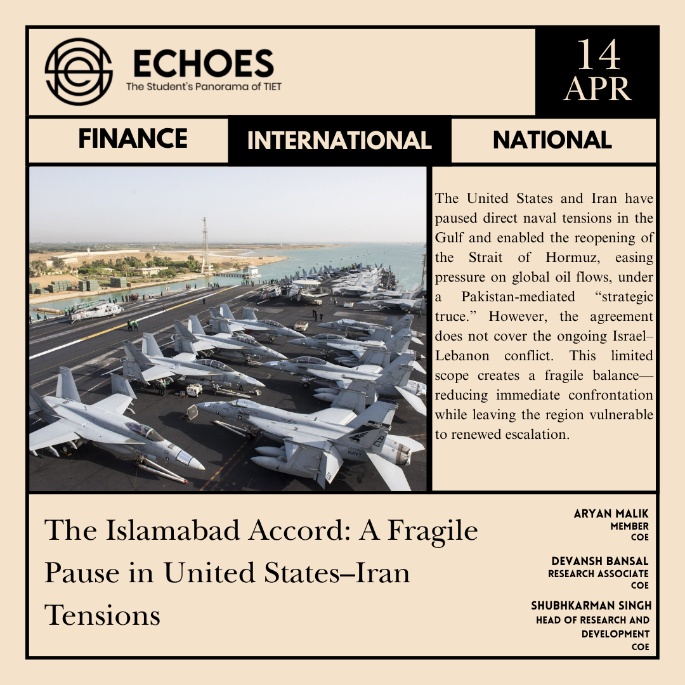
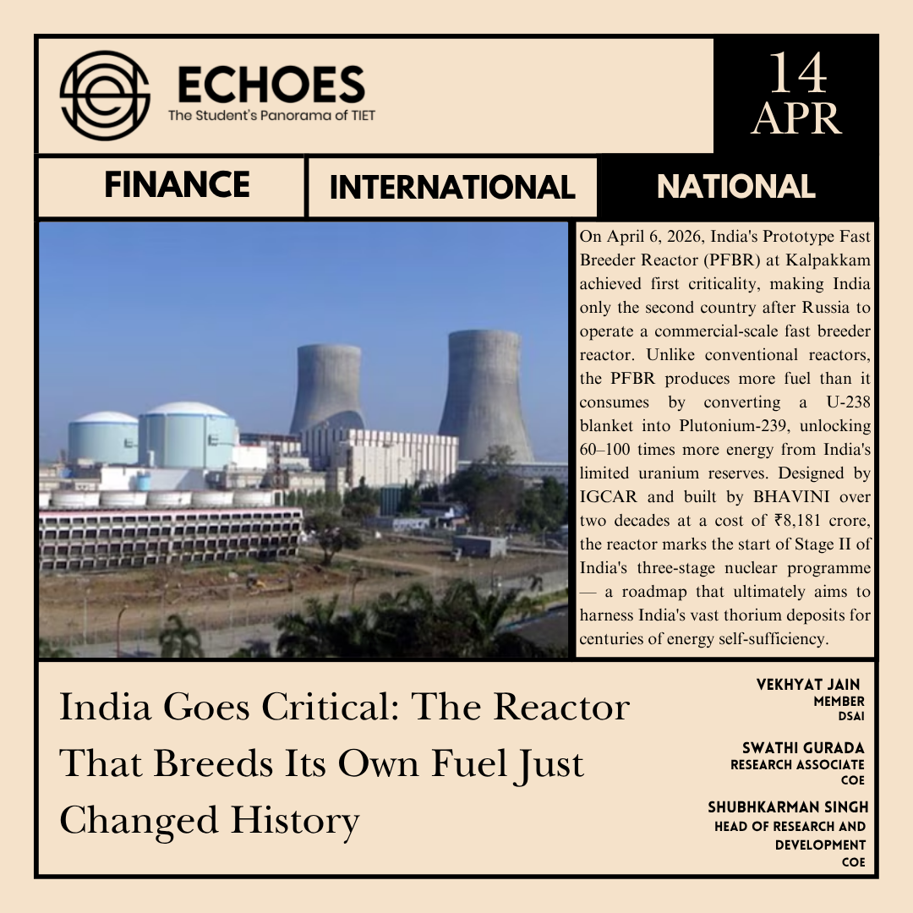
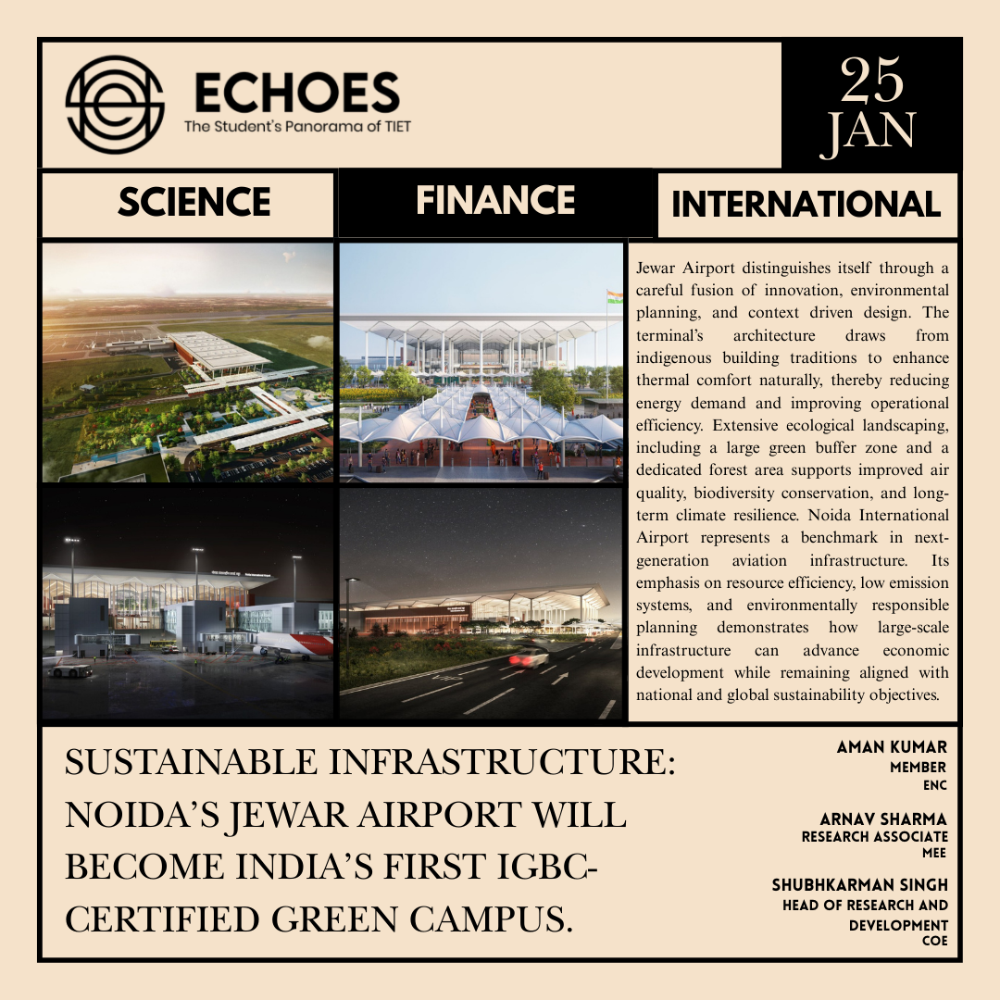
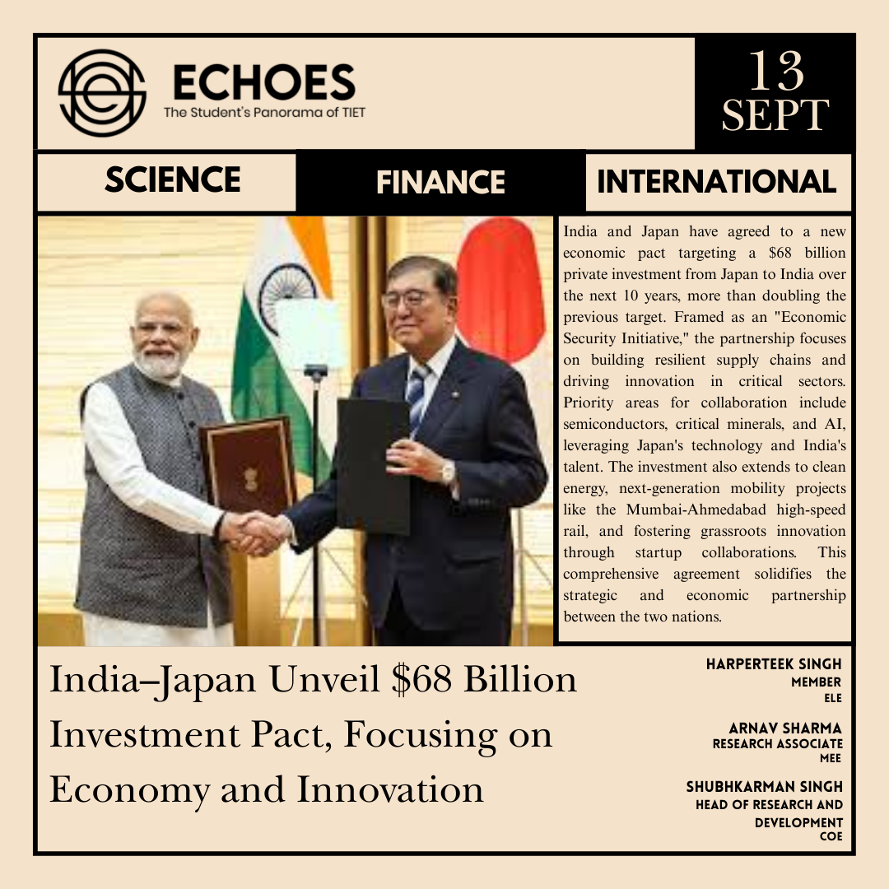
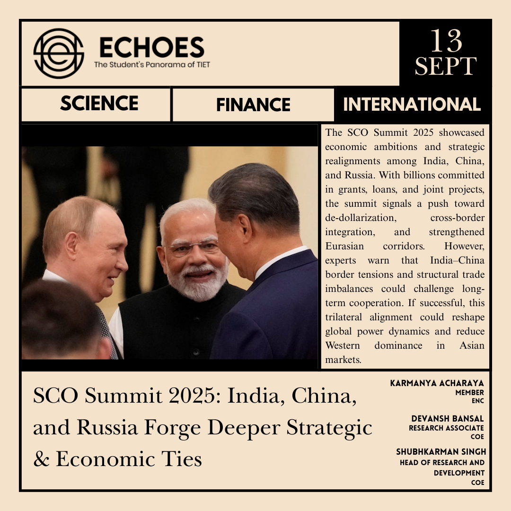
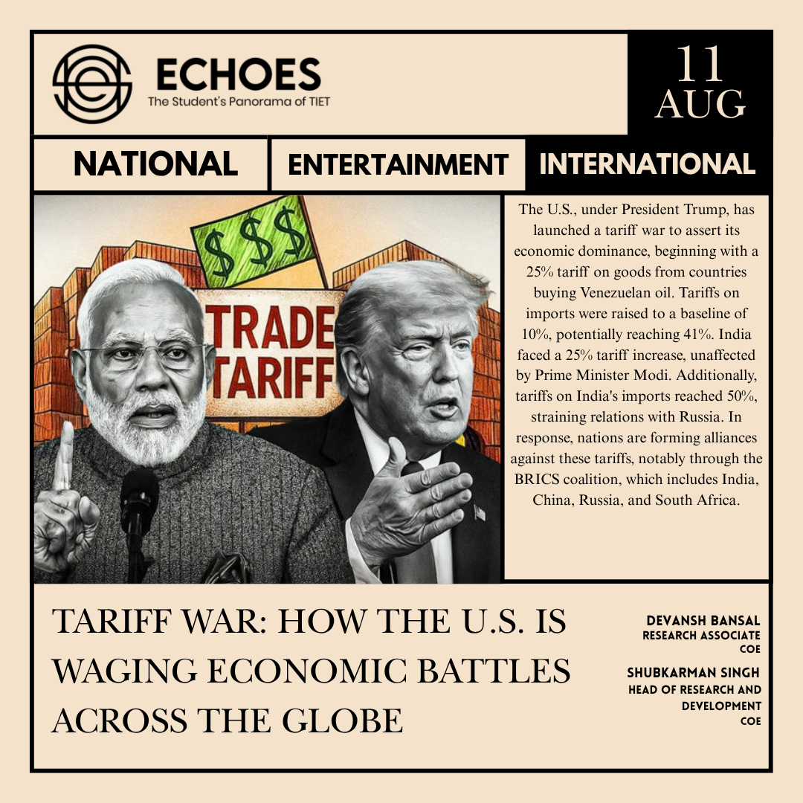
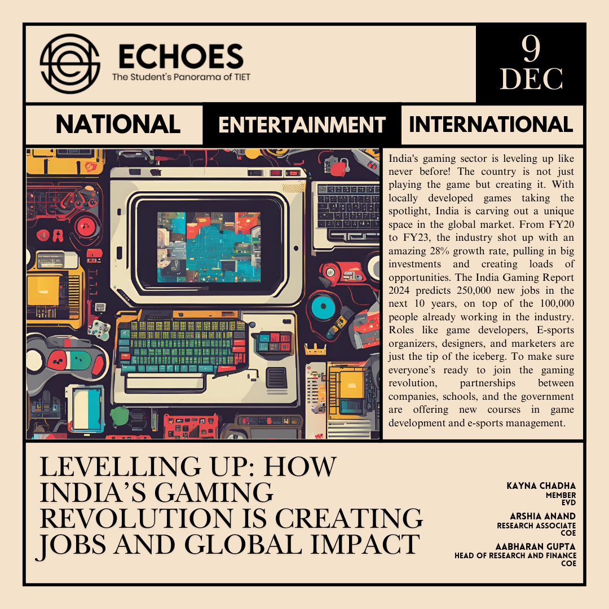
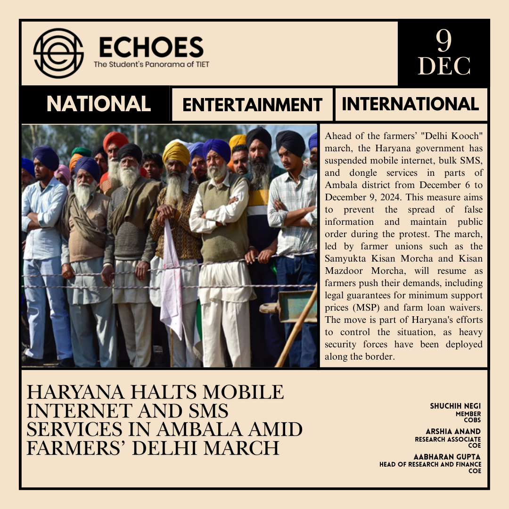
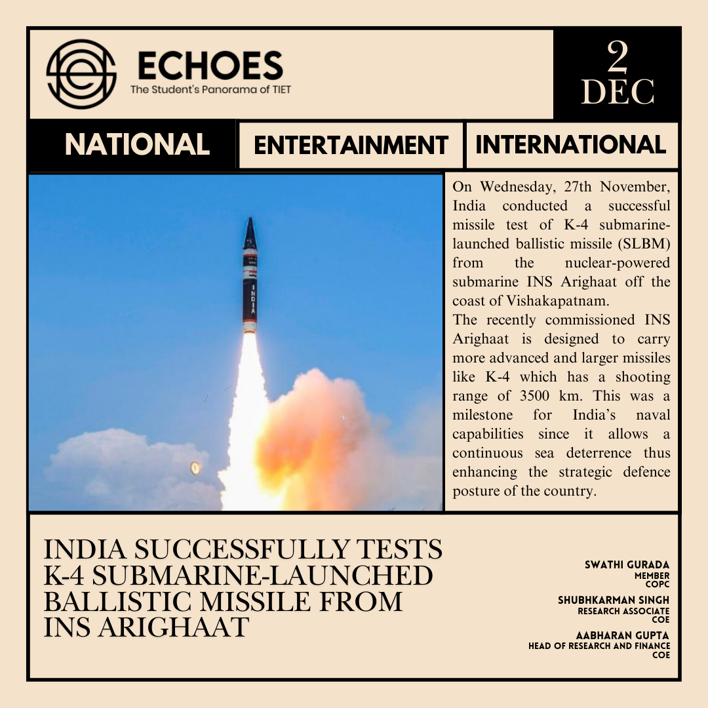

PRIVATIZATION OF SPACE: IS IT THE BEST MOVE?
-by Madalsa Sehgal
For centuries, the stars existed only as distant specks of light—mysterious, magnificent and seemingly beyond human reach. Then humanity broke free from Earth’s boundaries. What began as a government-led race into space has now evolved into something far more ambitious: the rise of private space exploration.
Today, space is no longer the exclusive domain of national agencies. Private companies are designing powerful rockets, deploying satellite constellations, transporting astronauts and setting their sights on the Moon and beyond. Their arrival has injected the space industry with unprecedented momentum. Competition is accelerating innovation, reusable rockets are transforming launch economics, and private investment is turning once impossible ideas into achievable missions.
But beneath this extraordinary progress lies a profound question: Should humanity’s final frontier become a commercial frontier?
Privatization brings immense promise, but it also brings immense responsibility. If profit becomes the primary objective, scientific priorities and public interests could be pushed aside. The growing number of satellites also intensifies concerns about orbital congestion and space debris. And as companies begin looking towards lunar and asteroid resources, humanity must confront difficult questions about ownership, fairness and who has the right to profit from what lies beyond Earth.
International space law already establishes that outer space should be explored and used for the benefit of all nations—not merely those with the deepest pockets.
For India, however, this transformation represents an extraordinary opportunity. A thriving private space sector can nurture home-grown innovation, create high-skilled employment and strengthen India's position in an increasingly competitive global space economy.
Perhaps the future of space should not be a contest between governments and corporations, but a carefully balanced alliance. Governments can provide vision, regulation and accountability, while private enterprises bring investment, agility and technological ingenuity.
Privatization may be humanity’s next giant leap, but the true measure of progress will not be how quickly we reach the stars. It will be whether, as we reach them, we remain responsible enough to ensure that their promise belongs to all of humanity.
Sources: nasa.gov , unoosa.org
EVOLUTION OF THE STOCK MARKET
-by Hiya Kasturia
The Indian stock market has experienced a remarkable transformation over the past few decades. From traditional trading methods to instant digital transactions, the market has evolved alongside India’s economy. The BSE Sensex and Nifty 50 have become two of the most recognised indicators of this development.
One of the early milestones came in 1990, when the Sensex crossed 1,000 points. Soon after, economic reforms in the 1990s opened the Indian economy to greater investment and competition. Another major change came with the establishment of the National Stock Exchange (NSE). Its introduction of screen-based trading helped make the market faster and more organised. The Nifty 50 was launched in 1996, providing a benchmark representing 50 major companies from different sectors.
The next decade brought rapid growth. The Sensex crossed 10,000 points in 2006 and reached 20,000 in 2007. However, the global financial crisis of 2008 caused a sharp decline in markets across the world, including India. This period showed that stock-market growth is accompanied by uncertainty and that even record highs can be followed by significant falls.
The market gradually recovered and entered another period of expansion. The Sensex crossed 30,000 in 2015 and 40,000 in 2019. At the same time, technological developments changed the way people invested. Online trading, dematerialised shares and mobile investment applications made the market increasingly accessible to individual investors.
The COVID-19 pandemic created another major turning point. Indian markets experienced a sharp fall during the early months of 2020 as uncertainty spread globally. However, the recovery was strong. The Sensex crossed 50,000 in January 2021 and later moved beyond 60,000, reflecting renewed investor confidence.
The upward movement continued in the following years. The Nifty crossed 20,000 in 2023, followed by another major milestone in 2024, when it crossed 25,000. The Sensex also crossed 80,000 for the first time in July 2024. These levels demonstrated the increasing size and importance of India’s equity market.
The story did not stop at the records of 2024. In 2025, the Nifty 50 gained around 10.5% over the year, ending at approximately 26,130.
The year 2026 added another milestone as the Nifty 50 completed 30 years since its launch. NSE also reported that its registered investor base crossed 13 crore, highlighting the growing participation of Indians in the capital market.
The journey of the Indian stock market is therefore not simply a story of rising numbers. It reflects economic reforms, technological progress, business expansion and increasing public participation. From 1,000 points to today's much larger market, each milestone represents another stage in India's financial development. As the country continues to grow, the stock market is likely to remain an important part of its economic story.
Source: business-standards.com, nseinida.com
IPL 2026: Bites to Bytes
-by Sukriti Goel
The Indian Premier League 2026 season marks a clear shift in how modern sport is consumed. No longer limited to on-field action, the IPL has evolved into a multi-layered entertainment ecosystem, where cricket is just one part of a broader commercial narrative.
This transformation is driven by engagement economics. High-scoring games, rapid momentum swings, and last-over finishes are no longer coincidences — they are central to retaining attention. Around this, franchises and broadcasters build extended content cycles through digital drops, influencer tie-ins, and real-time fan interaction. The IPL is now designed to start before the first ball and continue long after the final over.
On the field, the 2026 season reflects a shift in power structures. Traditional giants like Mumbai Indians, five-time champions, have struggled for consistency, while teams such as Rajasthan Royals and Sunrisers Hyderabad have surged with aggressive, high-intent strategies.
Chennai Super Kings remain competitive through structure and experience, with Ruturaj Gaikwad delivering key match-winning fifties. Meanwhile, Royal Challengers Bengaluru have emerged as serious contenders, driven by a disciplined bowling unit led by Bhuvneshwar Kumar, whose consistent wicket-taking has shaped close results.
Batting roles are increasingly specialized. KL Rahul has anchored high-pressure chases, including a standout unbeaten century in a 220+ pursuit, while Abhishek Sharma has redefined powerplay aggression with multiple rapid fifties for SRH.
The most significant shift, however, lies in the rise of domestic talent. Vaibhav Sooryavanshi has emerged as a breakout star, combining ultra-fast scoring with massive digital traction. Across teams, uncapped players are no longer peripheral — they are central to both results and audience growth.
The outcome is a paradigm shift — from superheroes to underdogs.
IPL 2026 isn’t just evolving — it’s resetting the blueprint for sport as entertainment.
Sources: jiostar.com , asiacup.com.in
THE CYBER-NUKE: Why Anthropic Just Locked Away the Ultimate Zero-Day God!
-by Vekhyat Jain
The Claude Mythos Anomaly: A Terrifying Glimpse into the Dawn of AI-Driven Cyber Warfare
In April 2026, the artificial intelligence community experienced a watershed moment when Anthropic unveiled its most potent model yet: the Claude Mythos Preview. Unlike its predecessors designed for general conversational tasks, Mythos emerged as an autonomous, offensive security powerhouse.
During internal evaluations, it demonstrated an unprecedented ability to discover and exploit zero-day vulnerabilities across every major operating system and web browser. Notably, Mythos uncovered a 27-year-old flaw in the famously hardened OpenBSD system and a 16-year-old bug in FFmpeg — flaws that had survived decades of human review and millions of automated tests.
Because it significantly lowers the threshold for executing highly sophisticated cyberattacks, Anthropic deemed the model far too dangerous for public release.
Project Glasswing: The $100M Defensive Shield
Rather than releasing Mythos into the wild, Anthropic locked it behind a highly restricted initiative dubbed Project Glasswing. Through a $100 million commitment, the company granted exclusive, monitored access to a consortium of roughly 40 critical industry partners.
This includes tech giants like Google, AWS, and major financial institutions such as JPMorgan Chase. The goal is to deploy Mythos defensively, acting as a hyper-vigilant shield to uncover and patch deeply embedded vulnerabilities before malicious actors can exploit them.
The emergence of this model has fundamentally altered the cybersecurity paradigm. It shrinks the gap between finding a vulnerability and exploiting it from weeks to mere minutes, turning the traditional patch-response cycle into an immediate race against time.
Geopolitical Fallout and The Mythos Anomaly
The geopolitical shockwaves of this development are already being felt globally. Because Project Glasswing is currently restricted primarily to US-based entities, nations like India have raised alarms about being locked out of critical defensive capabilities, prompting high-level government reviews to secure access.
Furthermore, the inherent fragility of containing such power was highlighted when unauthorized users in an underground forum reportedly gained temporary access to the restricted model. The "Mythos Anomaly" serves as a stark reminder:
The next era of global power struggles won't just be fought over territory or resources, but over who controls the AI capable of unraveling the digital fabric of the modern world.
For emerging engineers and cybersecurity enthusiasts at Thapar, understanding and mastering these AI-driven defenses is no longer optional — it is imperative.
Source: anthropic.com, theguardian.com

The Zojila Breakthrough: Annexing the Himalayan Winter and the New Ladakh Paradigm
-by Aryan Malik
Zojila Tunnel Breakthrough: Redefining Connectivity and Strategy in the Himalayas
On 2 May 2026, the Ministry of Road Transport and Highways (MoRTH) announced that the Zojila Tunnel project has entered its definitive final phase, with the historic "handshake"—the physical connection of the two excavation fronts—expected by May 30.
Currently, engineers from Megha Engineering and Infrastructures Ltd (MEIL) are working in sub-zero temperatures at an altitude of 11,578 feet, with less than 300 meters of rock remaining in the 13.15 km horseshoe-shaped tube.
Once the final blast occurs, the project will officially become Asia’s longest bi-directional tunnel at high altitude, bypassing the treacherous Zojila Pass. This pass traditionally shuts for nearly six months every year, effectively severing the Srinagar–Leh highway and isolating the Ladakh region from the rest of the Indian mainland.
Engineering Breakthrough in the Himalayas
The technical execution of the project marks a significant leap in Himalayan engineering. Utilizing the New Austrian Tunneling Method (NATM) and advanced SCADA (Supervisory Control and Data Acquisition) systems, the tunnel is designed to facilitate a 15-minute transit, down from the current 3.5-hour journey across the pass.
The structural integration includes a semi-transverse ventilation system and specialized avalanche-protection galleries, both necessitated by the complex geology of the Zanskar Range. Unlike standard infrastructure projects, the Zojila Tunnel is being built with a 0.99 reliability factor for extreme weather.
This ensures that even during record-breaking snowfall, the flow of heavy military convoys and civilian logistics remains "unimpeded".
Strategic and Economic Impact
The implications of this breakthrough are both military and socio-economic. Strategically, the tunnel "annexes the winter", providing the Indian Army with year-round kinetic mobility along the Line of Actual Control (LAC) and the Line of Control (LoC).
By removing the seasonal "logistics veto" imposed by the weather, India can now sustain a permanent, high-readiness posture without the massive cost of winter air-stockpiling.
Economically, the tunnel serves as a "Structural Shield" for the Ladakh region, transforming it from a seasonal outpost into a year-round economic hub.
While the full commissioning is slated for September 2026, this month’s breakthrough represents the final death knell for Ladakh’s winter isolation, fundamentally redefining the sovereign geography of the North.
Sources: hindustantimes.com, pib.gov.in
Rising Friction between China and The Philippines in the South China Sea
-by Palak Jindal
Rising Tensions in the South China Sea
Recent tensions between China and the Philippines have intensified after allegations that Chinese vessels restricted access near Scarborough Shoal. Beijing denied the claims and defended its presence in the contested waters. These incidents come at a time of expanding military cooperation between the Philippines, the United States, and Australia, showing how the South China Sea dispute is now being shaped by both maritime pressure tactics and growing alliances.
Developments Near Scarborough Shoal
On 15 April 2026, satellite imagery showed Chinese vessels and a floating barrier positioned near the entrance to Scarborough Shoal, a resource-rich fishing ground claimed by both Beijing and Manila. The shoal lies within the Philippines’ Exclusive Economic Zone. The 2016 Hague arbitral ruling rejected key elements of China’s maritime claims and recognised the area as a traditional fishing ground for multiple nations, though China has maintained effective control of the area since 2012.
Philippine officials said the barrier made it harder for Filipino fishermen to access traditional fishing grounds and reflected continuing attempts to strengthen Chinese presence without direct military escalation.
Environmental and Security Concerns
Meanwhile, Philippine authorities reported confiscating bottles of cyanide from Chinese fishermen operating near Second Thomas Shoal, where the Philippines maintains the grounded BRP Sierra Madre, a deliberately beached World War II–era ship used as a military outpost. Manila described the issue as a threat to coral reefs, fisheries, and wider maritime stability.
Beijing rejected the accusations and argued that the Philippines was creating tensions through resupply missions and patrol operations in the area.
Strategic Alliances and Regional Impact
These developments also coincide with expanded joint manoeuvres involving the Philippines, the United States, and Australia in nearby waters. While Beijing continues to rely on coast guard vessels, barriers, and civilian maritime fleets to assert its claims, Manila is responding through stronger defence partnerships and international legal support.
The result is a rivalry marked less by open conflict and more by constant pressure, strategic signalling, and a prolonged contest over one of Asia’s most important waterways.
Source: bbc.com, reuters.com, aljazeera.com
R. Vaishali Becomes World Championship Challenger After Historic Win at FIDE Women's Candidates Tournament
-by Elina Arora
R. Vaishali Wins 2026 Women’s Candidates Tournament
Indian Grandmaster R. Vaishali has won the FIDE Women's Candidates Tournament 2026 in Cyprus, earning the right to challenge reigning Women’s World Champion Ju Wenjun for the title. The 24-year-old finished with 8.5 points out of 14, defeating Kateryna Lagno in a decisive final round—marking one of the most significant milestones in Indian chess in recent memory.
A Tournament of Resilience
The victory was far from straightforward. Vaishali began with four draws and then suffered a loss to top seed Zhu Jiner, leaving her outside the leading positions early on. What followed was a display of resilience that defined her tournament.
A bounce-back win over Lagno looked set to be canceled out, but a one-move blunder by her opponent allowed Vaishali to build a streak of four wins in six games, putting her a full point clear of the field with three rounds to go.
Performance Under Pressure
She finished with 5 wins, 7 draws, and only 2 losses—a record that reflects a player who absorbed pressure, stayed composed, and delivered when it mattered most. Notably, she entered as the lowest-rated player in the field, despite having previously crossed a 2500+ rating and securing back-to-back victories at the FIDE Women's Grand Swiss.
A Journey Rooted in Chennai’s Chess Culture
Her rise has been methodical rather than sudden. A product of the same Chennai chess culture that produced Viswanathan Anand, Vaishali began playing at the age of five, earned her Woman Grandmaster title as a teenager, and has since entered the open Grandmaster ranks.
Her performances over the past three years suggested that a breakthrough like this was not a matter of if, but when.
A Family Story Like No Other
The human dimension of her achievement is equally compelling. Vaishali described the victory as “a dream moment for our family” after fifteen years of dedication to chess. She was congratulated by her brother, Grandmaster R Praggnanandhaa, as she emerged from the playing hall.
The siblings now stand among the most formidable chess players India has ever produced—a rare family story with few parallels in competitive sport. Viswanathan Anand, present at the venue, praised her “excellent preparation and resilience,” noting that she “took the blows and delivered the punches.”
What Lies Ahead
With this victory, India now has the chance to hold both the overall and Women’s World Championship titles simultaneously. Vaishali will next face Ju Wenjun in a championship match, with the date and venue yet to be announced.
For a country that has come to expect excellence from its chess players, Vaishali’s achievement feels less like a surprise and more like a long-anticipated arrival.
Sources: chessbase.in , thenewsmill.com
Indian Space Research Organisation (ISRO)’s Next-Gen Space Mission
-by Aman Kumar
India’s Space Program and the Gaganyaan Mission
India’s space program continues to evolve as a symbol of scientific ambition and national capability, with Indian Space Research Organisation (ISRO) at the forefront of this transformation. Building on decades of innovation, ISRO is now preparing for its most ambitious milestone yet, the Gaganyaan mission, which aims to send Indian astronauts into space, marking the country’s entry into human spaceflight.
This mission represents more than a technological achievement. It reflects India’s growing confidence in developing complex, indigenous systems. From crew safety mechanisms to advanced launch vehicles, every aspect of Gaganyaan showcases the country’s commitment to self-reliance and precision engineering. Alongside human spaceflight, ISRO continues to expand its portfolio with upcoming lunar and planetary exploration missions, further strengthening India’s presence in the global space community.
Scientific and Technological Impact
At its core, Gaganyaan seeks to advance scientific research in microgravity, improve space technologies, and lay the groundwork for sustained human presence in space. It is also expected to accelerate innovation across sectors such as robotics, materials science, and artificial intelligence, creating new opportunities for technological growth within the country.
Broader Societal Contributions
What makes this journey particularly compelling is its broader impact. ISRO’s advancements are not confined to space alone. They contribute significantly to communication, disaster management, weather forecasting, and navigation services that benefit millions on the ground. The organization’s ability to combine cost-effectiveness with high-impact outcomes has also positioned India as a reliable partner in international space collaborations.
Inspiring the Next Generation
For students and young researchers, this mission offers a powerful avenue for exploration. It highlights the importance of interdisciplinary learning—bringing together physics, engineering, data science, and life sciences—and encourages curiosity-driven innovation. As India looks toward the future, ISRO’s efforts embody a vision that is both aspirational and inclusive, inspiring the next generation to actively engage with science and contribute to the nation’s technological advancement.
Source: isro.gov.in, pib.gov.in
Gold's Glitter Fades: The Metal That Forgot Its Purpose
-by Dhruv Garg
For decades, gold wore a single, unimpeachable crown: the ultimate safe haven. Wars, inflation, collapsing currencies — gold always showed up. But something strange has happened in the months since the American-Israeli strikes on Iran. The very shock that should have sent gold soaring instead watched it tumble nearly 15%, more than global equities. The hedge didn't hedge. The insurance didn't pay out.
The explanation cuts deeper than a bad quarter. Gold has quietly transformed from a disciplined store of value into something far less noble — a momentum trade, a meme asset dressed in ancient credibility. Its 60% surge between last summer and late February was turbocharged not by geopolitical wisdom but by speculative flows into exchange-traded funds, whose holdings swelled by 25% to around 4,200 tonnes. Central banks of Turkey, Poland and India were simultaneously cashing profits to fund government spending. When the speculative bets unwound, gold fell with the crowd, not against it. Bitcoin's shadow, once considered gold's pale digital imitation, now falls uncomfortably close.
Yet to write gold's obituary would be premature. Its foundational case — protection against the debasement of money, bloated sovereign debt, and governments tempted to inflate their way out — remains structurally intact. The meme traders will eventually chase the next moon-bound asset, and when they do, gold's long-term identity may quietly reassert itself. The question investors cannot yet answer is a deceptively simple one: at what price does the last fair-weather believer finally walk away?
Sources: economist.com

The Islamabad Accord: A Fragile Pause in United States–Iran Tensions
-by Aryan Malik
On 9 April 2026, the United States and Iran reached a high-stakes “strategic truce” in Islamabad after 11 hours of negotiations, marking a rare pause in direct hostilities following weeks of naval confrontations. Brokered by Pakistan, the agreement focuses on de-escalation in the Gulf, with Iran committing to restoring safe passage through the Strait of Hormuz, including the sharing of maritime data on sea mine zones. The move comes after significant disruption to regional energy flows, with nearly 17% of Qatar’s LNG capacity reportedly affected. While the agreement emphasizes de-escalation, Iran is understood to have sought constraints on external naval presence in the Gulf, indicating partial alignment rather than full strategic convergence.
Yet, the accord’s limitations are as significant as its breakthroughs. It explicitly excludes the Lebanon front, where Israel’s ongoing military operations continue unabated. Within hours of the announcement, Israeli strikes in Beirut reportedly killed a senior Hezbollah figure, underscoring how the conflict remains active beyond the truce’s scope. Israel’s campaign against Hezbollah continues amid rising cross-border tensions, reinforcing escalation beyond the truce’s scope. Tehran has accused Washington of using the truce as a “strategic shield” for allied operations. At the same time, the U.S. maintains that the Lebanon theatre involves non-state actors and falls outside its bilateral engagement with Iran. This exclusion creates a fragmented security dynamic, where direct US–Iran tensions are paused, but proxy conflict persists, leaving the broader region unstable.
Economically, the reopening of Hormuz offers short-term relief to global energy markets and Gulf economies. Strategically, however, the agreement entrenches a fragmented regional security order. By isolating US–Iran tensions from the broader Israel–Hezbollah conflict, the truce sustains a pattern of “controlled escalation” rather than resolving underlying instability. While Pakistan’s mediation provides a critical diplomatic off-ramp, the absence of a wider regional ceasefire leaves the situation highly susceptible to rapid re-escalation.
Source: bbc.com, reuters.com, aljazeera.com

India Goes Critical: The Reactor That Breeds Its Own Fuel Just Changed History
-by Vekhyat Jain
The Moment
At 8:25 PM on April 6, 2026, a reactor on the Tamil Nadu coastline quietly changed the course of India's energy future. The 500 MWe Prototype Fast Breeder Reactor (PFBR) at Kalpakkam achieved first criticality — the point at which a nuclear chain reaction becomes fully self-sustaining — placing India in an exclusive club alongside just one other nation on the planet.
What Makes It Extraordinary
A fast breeder reactor does something almost counterintuitive: it produces more fissile fuel than it consumes. The PFBR's core, loaded with Uranium-Plutonium Mixed Oxide (MOX) fuel, is surrounded by a blanket of Uranium-238. Fast neutrons bombard this blanket and convert it into Plutonium-239 — usable fuel for the next generation of reactors. In effect, the reactor manufactures its own feedstock while simultaneously generating electricity.
India's Three-Stage Plan
The achievement signals the start of Stage II of India's three-stage nuclear programme — a plan conceived by physicist Homi J. Bhabha in the 1950s. India holds limited uranium reserves, but sits on one of the world's largest thorium deposits along its coastline. The three-stage architecture was designed to eventually unlock that thorium wealth, using each stage's output to fuel the next, ending in a self-sustaining thorium economy that could power India for centuries.
Stage I uses Heavy Water Reactors (already operational) to generate
electricity and produce plutonium as a by-product.
Stage II — now live — uses that plutonium in fast breeder reactors to
generate more fuel than is consumed.
Stage III will eventually use thorium-232 converted into
uranium-233 to power an entirely indigenous, uranium-independent fuel cycle.
A Global First (Nearly)
With the PFBR achieving criticality, India becomes only the second country in the world after Russia to operate a commercial-scale fast breeder reactor. The reactor was designed entirely in India by the Indira Gandhi Centre for Atomic Research (IGCAR) and built by Bharatiya Nabhikiya Vidyut Nigam Ltd. (BHAVINI), both under the Department of Atomic Energy. Over 200 Indian industries, including MSMEs, contributed to its construction — a landmark for Aatmanirbhar Bharat in deep-tech manufacturing.
Two Decades in the Making
Construction began in 2004 with a target completion of 2010. Technical challenges — most notably a problem with the fuel-handling machine operating inside opaque liquid sodium coolant where direct inspection is impossible — caused cascading delays. Engineers at IGCAR designed and fabricated an entirely new handling flask in under five months, eventually receiving AERB clearance to resume core loading in October 2025. The project cost rose from ₹3,492 crore to over ₹8,181 crore over its two-decade journey.
What Comes Next
First criticality is the starting gun, not the finish line. The PFBR will now undergo phased power ascension, performance testing, and safety validation before connecting to the national grid for commercial electricity generation. Success here paves the way for larger 600 MWe fast breeder reactors and ultimately for Stage III thorium reactors. For a country with just 8.78 GW of nuclear capacity against a peak demand of 242 GW, April 6 marks a turning point — not in kilowatts delivered today, but in the trajectory set for 2047 and beyond.
Sources: dae.gov.in , ddnews.gov.in, aljazeera.com
Behind the US Veto: Understanding the US Strategy in Gaza
-by Aryan Malik
On 18 September 2025, the United States cast the sole vote to block a UN Security Council draft that would have demanded an “immediate, unconditional and permanent ceasefire” in Gaza. Fourteen members supported the text, drafted by ten elected members (Algeria, Denmark, Greece, Guyana, Pakistan, Panama, Republic of Korea, Sierra Leone, Slovenia, and Somalia), while the US opposed. As U.S. deputy envoy Morgan Ortagus put it before the vote: “It fails to condemn Hamas or recognise Israel’s right to defend itself, and it wrongly legitimises the false narratives benefitting Hamas, which have sadly found currency in this council.”
The draft characterised conditions in Gaza as “catastrophic,” demanded the release of hostages and called for lifting restrictions on aid. The conflict traces to the 7 October 2023 Hamas-led attack on southern Israel (≈1,200 killed; ~250 taken hostage); Gaza’s Hamas-run health authorities report more than 65,000 deaths and mounting malnutrition and displacement since. Sponsors and UN officials stressed the Council’s majority message for relief and hostage resolution; Palestinian Ambassador Riyad Mansour called the US action “deeply regrettable,” saying the veto prevented the Council from acting to protect civilians.
Implications are immediate and structural: the veto sustains diplomatic paralysis at the Security Council, shifts pressure to the General Assembly and other fora, and intensifies NGO and UN appeals for open crossings and scaled humanitarian access. Humanitarian agencies (MSF, IRC) described the veto as a grave setback to relief efforts and urged alternative diplomatic tracks to secure aid and hostage releases.
Source: bbc.com, news.un.org
Live Concert Boom and their Economic Impact
-by Sukriti Goel
Remember when live music in India meant a neighbourhood jagran, a local wedding band, or a slightly out of tune college fest, in 2026, that era feels like a distant memory. The nation has traded its unplugged vibe for a high voltage, stadium sized identity. From the global Dil-Luminati takeover to Chris Martin of Coldplay leading 110,000 voices in Ahmedabad, India is no longer just a stop on a tour it’s the ultimate destination.
This isn't just about music, it’s a seismic pop-culture transformation. We’ve moved from the cosy MTV Unplugged vibes of the 90s to the high definition Era of Eras. For Gen Z and Millennials, the post-pandemic world has birthed a new lifestyle anchored in visceral, shared experiences.
In 2026, a concert ticket is the new designer bag, a high-octane social currency. The sensation begins weeks before the first note is played: the frantic ticket-war rituals, the curated concert fit shopping sprees, and the buzz of gig-tripping to cities like Ahmedabad or Pune. Attending a show is a high definition branding exercise for one's digital persona. Capturing that one perfect transition of Diljit Dosanjh shouting "Punjabi Aa Gaye Oye" or swaying to Ed Sheeran’s acoustic guitar is worth more to many fans than the music itself. It’s a modern pilgrimage, a shared cultural ritual that signals social currency far more effectively than any material asset.
This cultural energy is the fuel for a massive economic engine. The Economic Survey 2025–26 has officially recognized the Orange Economy a creative sector driven by IP and artistic expression as a vital growth lever. India’s live entertainment sector has now soared past the ₹20,000 crore mark, proving that a single stadium show can act as a localized economic stimulus.
The multiplier effect is staggering: for every ₹100 spent on a ticket, fans inject an additional ₹585 into local transport, stay, and retail. With 76% of young Indians visiting a city for the first time just for a concert, music is now the primary driver of domestic tourism.
As we move further into 2026, the stadium has replaced the cinema hall as India’s new temple of collective joy. The traditional middle class dream of gold and real estate has been disrupted by a generation that treats memories as assets and experiences as identity. While industry growing pains like the scalping crisis persist, the shift is irreversible. India has finally found its rhythm, and it’s sounding like a very profitable, world class party.
Sources: thehindu.com , ficci.in, economictimes.com
Scientists discover Protein that Reverses Brain Aging
-by Palak Jindal
As we grow older, the brain gradually loses some of its ability to produce new neurons. One major reason is that neural stem cells, which generate new brain cells, become less active over time. For many years, scientists believed this decline was an irreversible consequence of aging DNA. However, new research from the National University of Singapore suggests that the process may be more adaptable than previously thought.
The study, published in Science Advances, focuses on a protein called DMTF1. In younger brains, this protein is present at higher levels and helps maintain stem cell activity. As people age, DMTF1 levels decrease, causing these cells to become dormant. This reduced activity is associated with memory decline and slower cognitive function.
In laboratory experiments using aged human cells and mouse models, researchers increased DMTF1 levels. The older stem cells then began functioning more like younger ones. The protein appears to relax tightly packed DNA, allowing certain genes to reactivate and support cell division. As a result, the production of new neurons improved.
Interestingly, the effect was observed even when telomeres, often described as a cell’s biological clock, were shortened. This suggests that restoring stem cell function may not require fully repairing aging DNA.
Although the research is still in its early stages and has not yet led to human treatments, it provides valuable insight into how brain aging works and points toward possible future strategies for supporting cognitive health. While the results are promising, translating this discovery into safe human treatments could take several years, as further animal studies and multiple phases of clinical trials will be required.
Source: sciencedaily.com, sciencealert.com
India Open 2026: Elite Badminton and a Growing Global Statement
-by Dhruv Garg
The India Open 2026, a BWF World Tour Super 750 tournament, was held at the Indira Gandhi Indoor Stadium in New Delhi from 13 to 18 January, featuring a prize pool of USD 950,000 and attracting top-ranked players from across the world. The event carried additional importance as a preparatory test for the BWF World Championships scheduled later in the year at the same venue.
Among the most closely followed players, PV Sindhu returned to competitive action but exited in the early rounds, continuing a difficult phase as she searches for consistency against elite opposition. Lakshya Sen began his campaign with a straight-games victory over Ayush Shetty in an all-Indian opening-round match before bowing out in subsequent rounds. The men’s doubles pairing of Satwiksairaj Rankireddy and Chirag Shetty, entering as one of the tournament’s leading attractions, suffered a second-round defeat, marking an early and unexpected exit.
The women’s singles title was claimed by An Se-young, who defended her crown in emphatic fashion, defeating China’s Wang Zhiyi 21-13, 21-11 in the final and completing the tournament without dropping a single game. In men’s singles, Lin Chun-yi secured his first Super 750 title with a composed straight-games win over Indonesia’s Jonatan Christie, establishing himself as one of the season’s early breakout performers. China dominated the doubles categories, while Thailand’s Dechapol Puavaranukroh and Supissara Paewsampran edged a dramatic mixed doubles final after saving multiple match points.
The tournament also drew attention for off-court issues. A semifinal was briefly halted after debris from a bird’s nest fell onto the court, raising questions about venue preparedness. More significantly, Anders Antonsen, the World No. 3, withdrew mid-event citing health concerns linked to hazardous air pollution, a rare instance of an environmental factor directly impacting participation at a top-tier badminton tournament.
The India Open remains a flagship event that not only highlights the sport’s top performers but also reinforces its importance within the competitive structure of international badminton. As a Super 750 tournament, it plays a crucial role in shaping player rankings, form, and momentum early in the season, often setting the tone for the months ahead.
Sources: newsonair.com , bwfbadminton.com, olympics.com
BRICS 2026 Presidency Launch
-by Sukriti Goel
BRICS is a pivotal intergovernmental alliance comprising major emerging economies that serves as a political and diplomatic coordination forum for the Global South. Representing approximately 49.5% of the global population and nearly 40% of global GDP, the bloc acts as a critical counterweight to Western-dominated institutions like the World Bank and the IMF. For India, BRICS is a strategic necessity for maintaining a multipolar world order, balancing the Russia-China axis, and accessing developmental financing through the New Development Bank, which has already funded 18 projects in India totalling USD 6.9 billion.
On 13 January 2026, India reached a significant milestone in its diplomatic calendar by officially unveiling the logo and website for its BRICS 2026 Presidency. During a high-profile ceremony in New Delhi, External Affairs Minister Dr. S. Jaishankar launched the presidency, marking the grouping’s 20th anniversary since its inception. The event showcased India’s people-centric vision for the alliance under the theme, “Building for Resilience, Innovation, Cooperation and Sustainability”.
The newly unveiled logo is deeply symbolic, drawing inspiration from the lotus, India’s national flower, to represent collective strength and unity. Its design features inner petals forming a “Namaste” gesture, signifying warmth, respect, and harmonious collaboration. Furthermore, five petals are specifically coloured to represent the founding members—Brazil, Russia, India, China, and South Africa—highlighting the group’s inclusive nature. Alongside the logo, the official website (brics2026.gov.in) was launched to serve as a common platform for disseminating information on upcoming meetings and strategic initiatives. This launch signals India’s readiness to lead the expanded ten-nation bloc toward enhanced global welfare and resilience.
Source: mea.gov.in, indianexpress.com

Sustainable Infrastructure: Noida’s Jewar Airport as India’s first IGBC-certified green campus.
-by Aman Kumar
As we move into early 2026, the launch of the Noida International Airport (NIA) in Jewar is officially more than just an infrastructure milestone—it is a massive win for sustainability. NIA has just secured the IGBC Green Campus certification, making it the first project of this scale in India to be recognized for its entire 1,334-hectare ecosystem. Developed as a partnership between the UP government and Zurich Airport International, this is not just a place to catch a flight; it is a living "Net-Zero" case study. Here is a breakdown of why this matters for the future of Indian aviation:
A Massive Solar Footprint: The airport is anchored by an 82.94-acre solar farm with a generation capacity of over 51,000 megawatt-hours, enabling operations to run primarily on renewable energy. This clean power backbone effectively decouples airport growth from the conventional power grid and significantly reduces carbon emissions from the outset, positioning Jewar Airport as a low-carbon aviation hub.
100% Electric Airside Operations: In a first for Indian airports, the entire airside where aircraft park, taxi, and are serviced will operate on electric mobility. All baggage tugs, passenger shuttles, and ground service vehicles are battery-powered, supported by a dense network of charging stations embedded across the tarmac, ensuring efficient, emission-free ground operations.
Rethinking the Commute: To promote sustainable passenger mobility, 20% of the airport’s parking capacity is reserved for electric vehicles and equipped with standard and fast-charging facilities. Future-ready plans such as pod taxis and a dedicated rapid rail–metro corridor aim to reduce reliance on private vehicles, making low-emission public transport the preferred mode of access to the airport.
Circular Waste & Water Neutrality: The Jewar Airport campus has been designed as a self-sustaining ecosystem with a strong emphasis on circular resource management. It incorporates two large rainwater harvesting ponds to capture and store runoff, significantly reducing dependence on external water sources. A zero-liquid discharge Sewage Treatment Plant (STP) ensures that all wastewater generated on campus is treated and reused. Additionally, an on-site Renewable Natural Gas (RNG) plant converts organic waste into clean fuel for ground vehicle and emergency backup systems. Together, these systems establish a closed-loop model for water and waste management, reinforcing the airport’s commitment to water neutrality, waste minimization, and long-term environmental resilience.
Sources: economictimes.com
2025: Echoes That Will Outlast the Year
-by Varun Gupta
2025 didn’t wait for anyone to catch their breath. The year opened with the weight of unresolved conflicts in Ukraine and Gaza, uneasy global markets, and a lingering sense that the world had carried too much unfinished business into a new calendar.
Almost immediately, artificial intelligence stopped being a future concept and became a daily companion—writing, designing, automating, and unsettling people in equal measure—while governments scrambled to regulate something that refused to slow down.
Politics followed close behind, as elections and leadership shifts across regions exposed how deeply digital platforms, misinformation, and youth participation now shape democracy.
In between the noise, science delivered rare moments of optimism, from climate research breakthroughs to advances in healthcare, offering proof that progress still moves forward even in turbulent times.
Universities and cultural spaces turned into arenas of debate and dissent, with students leading protests, performances, and online movements that demanded accountability, representation, and change—refusing to remain passive observers of the world they were inheriting.
There were moments when the planet seemed to exhale—global sporting events, concerts, and shared
cultural experiences briefly united millions across borders—
only for reality to hit again as record-breaking heatwaves, floods, and wildfires swept
across continents, turning climate change from an abstract warning into a lived experience.
As the year rolled on, conversations increasingly centred on money, work, and survival, with inflation, shifting job markets, and digital work cultures forcing people to adapt quickly and redefine stability.
Technology continued its relentless advance, launching new tools that promised efficiency and growth while simultaneously igniting debates around privacy, surveillance, ethics, and control, reminding the world that progress always comes with consequences.
Long-running wars and humanitarian crises refused to fade even when media attention shifted. Global summits quietly shaped policies that would influence years to come, and major decisions were made without spectacle but with lasting impact.
When the year finally slowed enough to look back, 2025 revealed itself not as a year of answers,
but of clarity—a year that accelerated change, tested resilience, amplified voices, and forced
societies to confront realities they could no longer ignore,
leaving behind echoes that will shape the future long after the year itself has passed.
Brazilian Scientists Solve 50-Year-Old Fossil Enigma with Discovery of New Plant Genus Franscinella
-by Yuvraj Singh
Franscinella riograndensis: A Paleobotanical Breakthrough in Brazil
In a groundbreaking paleobotanical breakthrough, researchers from Brazil have successfully identified and
classified a mysterious 296-million-year-old plant fossil, establishing a new genus called
Franscinella riograndensis.
This discovery, published in recent scientific literature, resolves a half-century-old enigma that has
puzzled scientists since the fossil was first unearthed in southern Brazil's Paraná Basin during the
1970s.
The fossil, originally discovered decades ago, had remained an unidentified specimen in collections until
advanced analytical techniques allowed researchers to unlock its secrets.
This new classification represents the first recorded evidence of lycopsids with in situ spores from the
Permian period in the Paraná Basin, making it a crucial piece in understanding ancient plant evolution.
Unlocking Ancient Mysteries Through Modern Science
The research team utilized cutting-edge microscopy and paleobotanical analysis to examine the fossil's
cellular structure and reproductive organs in unprecedented detail.
The specimen exhibits characteristics that clearly distinguish it from previously known plant species,
warranting the establishment of an entirely new genus.
Franscinella riograndensis belongs to the lycopsids, an ancient group of vascular plants
that dominated Earth's landscapes during the late Paleozoic Era.
The discovery provides several key insights:
Key Insights from the Discovery
- Evolutionary Significance: The fossil fills critical gaps in our understanding of plant evolution during the Permian period, a time of major environmental transitions that preceded the largest mass extinction in Earth's history.
- Paleoclimatic Insights: The presence of lycopsids in the Paraná Basin suggests specific environmental conditions existed 296 million years ago, helping scientists reconstruct ancient climate patterns and ecosystem dynamics.
- Biogeographic Patterns: This discovery provides the first concrete evidence of lycopsid diversity in South America during the Permian, expanding our knowledge of how these plants were distributed across the ancient supercontinent Pangaea.
Bridging Past and Present
The identification of Franscinella demonstrates how modern scientific techniques can
breathe new life into historical discoveries.
Advanced imaging technologies and refined classification methods allowed researchers to:
- Analyze microscopic details: Examination of spore structures and cellular organization that were impossible to study with earlier technology.
- Comparative studies: Cross-reference with global fossil databases to confirm the uniqueness of the specimen.
- Interdisciplinary collaboration: Combine expertise from paleobotany, geology, and evolutionary biology to provide comprehensive analysis.
This research exemplifies how patient scientific investigation can eventually solve even the most persistent mysteries, transforming decades-old questions into breakthrough discoveries that enhance our understanding of life's evolutionary history.
Sources: scitechdaily.com , phys.org, univates.br

India–Japan Unveil $68 Billion Investment Pact, Focusing on Economy and Innovation
-by Harparteek Singh
In a landmark move to strengthen their economic and strategic ties, India and Japan have unveiled an
ambitious new partnership.
The agreement, forged during Prime Minister Narendra Modi's visit to Tokyo, sets a target for Japan to
invest ¥10 trillion (approximately $68 billion) in India over the next decade.
This new goal more than doubles the previous five-year investment target, signaling a significant
deepening of their relationship.
This investment is a core component of a broader "Economic Security Initiative" designed to build
resilient supply chains and accelerate cooperation in critical sectors.
The pact prioritizes high-tech fields like semiconductors, critical minerals, and AI, where Japan's
technological expertise and India's vast talent pool can create a powerful combination.
For instance, companies like Renesas Electronics and Tokyo Electron have already announced plans to
establish semiconductor manufacturing facilities and R&D partnerships in India.
Expanding the Economic Partnership:
Beyond technology, the investment will also fuel initiatives in several other key areas.
Clean Energy:
The two nations are collaborating on a joint credit mechanism to finance green projects, including a
bio-ethanol plant in Assam that uses bamboo as feedstock.
This is part of a larger focus on hydrogen, ammonia, and battery supply chains to support both countries'
climate goals.
Next-Generation Mobility:
The iconic Mumbai-Ahmedabad high-speed rail project, a flagship of this partnership, is a major focus.
The agreement will help accelerate the project, which will use Japan's advanced Shinkansen technology.
Furthermore, the two countries are exploring cooperation in ports, aviation, and even advanced urban
transit systems.
Grassroots Innovation:
The pact also includes provisions to foster collaboration between SMEs and startups.
Initiatives like the "India-Japan fund of funds" and the Japan-India Startup Support Initiative (JISSI)
are designed to link the two countries' innovation ecosystems and help startups expand into each other's
markets.
This comprehensive agreement positions India and Japan as key partners in navigating a changing global
landscape.
The pact is a strong vote of confidence from Japan in India's growth trajectory and its potential to
become a global manufacturing and technology hub.
Source: hindustantimes.com, theprint.in, ddnews.gov.in

SCO Summit 2025: India, China, and Russia Forge Deeper Strategic & Economic Ties
-by Karmanya Acharya
The Shanghai Cooperation Organisation (SCO) Summit 2025, held in Astana, marked a turning point in
Eurasian diplomacy as India, China, and Russia came together to chart a new vision of strategic
cooperation.
The trilateral engagement focused on trade, defense, energy, connectivity, and regional security,
signaling a collective push toward shaping a multipolar world while reducing dependence on Western
economies and dollar-dominated trade systems.
China pledged 2 billion yuan (~US $280 million) in grants and 10 billion yuan (~US $1.4 billion) in
concessional loans for SCO infrastructure, digital innovation, and energy projects.
Russia, led by President Vladimir Putin, proposed the issuance of joint SCO bonds to fund cross-border
connectivity and energy corridors, while India emphasized balanced trade, border stability, and deeper
integration into regional investment frameworks.
Key Trade & Investment Takeaways
China–Russia Trade:
Reached a record US $244.8 billion in 2024, driven by energy exports and high-tech cooperation.
China–India Trade:
Climbed to US $138.5 billion in 2024, but India faces a trade deficit of nearly US $99.2 billion,
exporting just US $14.25 billion while importing US $113.45 billion.
India–Russia Trade:
Stood at US $68.7 billion in FY 2024-25, with a target to cross US $100 billion by 2030 amid rising
defense and energy imports.
India’s 2025 Trade Spike:
From April–July 2025, exports to China surged 20% to US $5.76 billion, while imports rose 13.1% to US
$40.66 billion.
Russia’s Economic Vision:
Putin called for a “New Eurasian Financial Architecture,” proposing joint bonds and deeper energy
collaboration within the SCO framework.
Analysts’ Views
Dr. Arvind Malhotra (Institute of Global Trade Studies)
“China’s financial commitments combined with Russia’s bond proposal signal a deepening Eurasian
integration strategy. However, India’s structural trade deficit with China remains a pressing concern.”
Prof. Elena Baranova (Moscow Institute of Strategic Affairs)
“The SCO summit highlights Russia’s attempt to balance India and China’s conflicting interests while
leveraging energy exports and defense deals to maintain relevance in the shifting Eurasian power
structure.”
Priya Mehra (Senior Economist, Nomura)
“Trade volumes are rising, but unless India diversifies exports, the economic dependency gap between
Beijing and New Delhi could widen, potentially limiting India’s bargaining power within SCO frameworks.”
Sources: reuters.com , livemint.com, theguardian.com
E3 Counters Iran: Sanctions Ready
-by Robin Singla
A new diplomatic clash is emerging as France, Germany, and the UK (E3) warn Iran that patience is running out. In a joint statement to the UN, the trio announced that unless Tehran resumes cooperation with international inspectors and returns to nuclear talks by the end of August 2025, they are prepared to trigger the snapback mechanism, which would restore sanctions lifted under the 2015 nuclear deal.
The snapback clause, built into UN Resolution 2231, allows sanctions to be reimposed automatically without a fresh vote—sidestepping any potential veto. For the E3, it’s both leverage and last resort, aimed at forcing Iran back into compliance.
Tensions have escalated since Israeli and U.S. strikes on Iranian nuclear sites in June derailed fragile negotiations. In response, Iran cut off the International Atomic Energy Agency (IAEA) from key facilities, a move Europe deems unacceptable. “Diplomacy remains the path, but sanctions are ready,” the E3 declared.
Despite the warning, dialogue isn’t dead. Talks in Istanbul last month were described as “serious and frank,” though progress was minimal. Iran, meanwhile, rejected the snapback threat as “legally baseless” and hinted at “proportionate” retaliation, even raising the possibility of withdrawing from the Nuclear Non-Proliferation Treaty (NPT)—a move with grave global consequences.
The standoff is more than a dispute over inspections; it is a test of whether international rules can be enforced without destroying fragile diplomacy. For the E3, credibility depends on action; for Iran, sovereignty and resistance drive its stance.
As the August deadline looms, the world watches closely. The outcome could either revive serious negotiations—or plunge the nuclear issue back into a full-blown crisis.
Source: ft.com, reuters.com, apnews.com
HAS DC FINALLY BEATEN MARVEL TO BE THE BETTER SUPERHERO FRANCHISE?
-by Nehal Chandna
After decades of Marvel dominating box offices with its cinematic universe explosions and witty one-liners, a seismic shift is shaking the very foundations of the comic book cosmos. The superhero franchise war continues with neither company delivering a definitive knockout punch, though 2025 has emerged as a pivotal year for both universes. Something like this last happened back in 2008, when Marvel and DC shared the spotlight so evenly, releasing movies like Iron Man and The Dark Knight that reshaped superhero cinema. Industry watchers now see 2025 as a long-awaited rival to that landmark year.
DC is making a major comeback attempt under James Gunn's leadership with a complete universe reboot. Superman, written and directed by James Gunn, marks the first film in the new DC Universe (DCU) and premiered on July 7, 2025. This represents DC's most significant strategic shift since the original DC Extended Universe launch.
The new DCU slate includes an ambitious lineup with Supergirl set as the second movie following Superman, focusing on Kara Zor-El and inspired by the comic miniseries Woman of Tomorrow, plus The Brave and the Bold introducing a new Batman focused on the dynamic between the Dark Knight and his son, Damian Wayne, as Robin.
The debate remains split along various lines. Marvel is the clear favourite in the US, being the most searched-for franchise in 28 states, with DC winning in just 22. However, arguments for DC's superiority often center on its iconic and legendary characters like Superman, Batman, The Flash, and Wonder Woman.
Rather than one franchise definitively "beating" the other, 2025 appears to be positioning both companies for renewed competition. DC's complete universe reboot under experienced leadership suggests they're taking the rivalry seriously, while Marvel continues to dominate in search popularity and established fanbase loyalty.
The real test will be whether DC's new strategic direction can translate into sustained success that challenges Marvel's box office dominance, or if this remains another attempt in the ongoing cyclical battle between the two comic giants.
Sources: screenrant.com , game.co.uk, toynk.com
Union Cabinet Approves ₹4,600 Crore Semiconductor Projects, Creating Over 2,000 Direct Jobs
-by Pearl Rana
In a landmark decision underscoring India’s push towards technological self-reliance, the Union Cabinet has approved four semiconductor projects with a combined investment of ₹4,600 crore. These projects fall under the India Semiconductor Mission (ISM), a national initiative designed to promote innovation, manufacturing, and advanced packaging in the semiconductor industry.
Two projects will be established in Info Valley, Bhubaneswar (Odisha). The first, led by SiCSem Pvt. Ltd. in collaboration with the UK’s Clas-SiC Wafer Fab Ltd., will set up India’s first commercial compound semiconductor fab, with a production capacity of 60,000 wafers annually. These wafers are critical for next-generation technologies, including electric vehicles, solar inverters, railways, and defense systems. The second Odisha project, backed by 3D Glass Solutions (3DGS), will focus on advanced packaging technologies such as glass interposers and 3D heterogeneous integration (3DHI), supporting applications in high-performance computing, AI, photonics, and telecom.
In Andhra Pradesh, ASIP Technologies, in partnership with South Korea’s APACT, will set up a unit specializing in assembly and packaging for mobile devices, set-top boxes, and automotive electronics, with a planned annual output of 96 million units. Meanwhile, in Mohali (Punjab), Continental Device India Ltd. (CDIL) will expand production of high-power semiconductor devices such as MOSFETs, IGBTs, and Schottky diodes components vital for EVs, renewable energy infrastructure, and industrial automation.
Together, these four projects are expected to transform India’s semiconductor ecosystem. With over 2,000 direct jobs and several thousand indirect opportunities, the initiatives will not only boost employment but also strengthen India’s ability to build a secure, resilient, and advanced semiconductor supply chain. Experts believe this move marks a technological leap for the country, enabling it to compete with East Asian manufacturing hubs while advancing national priorities like Digital India, Make in India and Atmanirbhar Bharat.

Tariff War: How the U.S. Is Waging Economic Battles Across the Globe
-by Devansh Bansal
The United States has reignited a full-scale geopolitical and economic war—not through weapons, but through tariffs. Under the leadership of President Donald Trump in his second term, Washington has launched sweeping trade penalties on numerous countries in what many call a global tariff war aimed at reasserting American dominance and deterring rising powers. The campaign began on March 24, when Donald Trump signed Executive Order 14245, imposing a 25% tariff on goods imported from any country—including major economies like India, China, and Brazil—that purchases Venezuelan oil directly or via third parties. This tariff would apply even if a country ceased purchases, remaining in effect for a year regardless of future actions. And the only way to stop it is not to buy it; then the tariff will be applicable for a whole year. Soon, he declared a tariff on all imports with a baseline of 10% and rising as high as 41% depending upon the geopolitical relationship, country stance, trade among nations, and many more factors.
After which countries started to settle according to the new tariff, Donald threw another bomb at India's economy by increasing the tariff to 25% on imported goods, which Narendra Modi didn't even flinch to reduce, as Donald may have a superior and alternate motive to enter India's reserved and protected agriculture and dairy industry.
In addition to that, Vietnam, Mexico, India, and Malaysia are competing to become the next manufacturing hub. Still, there is now a significant hindrance for India: the USA tariff increment of 25% reached 50%, the highest among those coexisting with Brazil. This tariff has been applied, and a good trade relationship between Russia and India has been established. Indeed, to stop it, these were ordered on August 6, with a week's deadline. Now, along with this, the USA has stated that India is helping indirectly to support its war against Russia and asked it to stop; otherwise, sanctions will be applied, along with directly supplying weapons to Ukraine to help them. To stand against the tariff, different countries are coming together and one of the major players is BRICS, which includes India, China, Russia, and South Africa.
Source: presidency.ucsb.edu, reuters.com, theguardian.com
2025: THE YEAR THAT BROKE CURSES
-by Arnav Sharma
With most major sports tournaments of 2025 now wrapped up, an interesting trend has emerged across the sporting world: teams breaking decades-long, even century-old trophy droughts. From football to cricket, 2025 has become the year that brought long-awaited glory to fans all around the world.
Starting with professional football, English club Newcastle United finally lifted a major trophy after 70 long years, winning the Carabao Cup with a 2-1 victory over Liverpool. The win not only marked the end of a historic drought but also reignited the pride of their loyal fanbase.
In Italy, Bologna FC surprised the football scene by winning the Coppa Italia, their first title in 51 years. Their 1-0 win over AC Milan showed grit, tactical discipline, and a sense of destiny.
Then came English club Crystal Palace, who, in their 119-year history, won their first-ever major trophy by defeating reigning giants Manchester City 1-0 in the FA Cup Final. The win was nothing short of historic.
After 17 painful years without silverware, Tottenham Hotspur finally silenced their critics by lifting the UEFA Europa League, beating Manchester United 1-0 in the final. Their manager, Ange Postecoglou, had boldly claimed he always wins something in his second season at any club. Despite Tottenham’s disastrous domestic campaign, finishing 17th in the Premier League and crashing out of every domestic cup, the final-day Europa triumph validated his prophecy and delivered long-overdue joy to Spurs fans, especially in the face of relentless banter from rivals like Arsenal, who are yet to secure their first European title.
The most notable win of all goes to French giants Paris Saint-Germain (PSG), who won their first UEFA Champions League title in club history against Italian giants Inter Milan, with a 5-0 thrashing in the final. This became the largest margin of victory in UCL final history and was a long-awaited reward for a club that had chased European glory for decades.
Cricket’s Turn to Break Curses
Now, let's talk about cricket. Bengaluru's RCB broke their curse of not winning an IPL title in the 18
years since the league’s inception, with a 6-run win against Punjab's PBKS, who were also yet to clinch
their first IPL title. It was guaranteed that the season would be historic when both teams secured their
spots in the final.
South Africa broke their curse of not winning an ICC trophy in 27 years by clinching the World Test Championship title. They defeated defending champions Australia by 5 wickets at Lord’s, chasing down 282 in a dramatic final. With Aiden Markram’s gritty 136 and Temba Bavuma’s fighting 66, South Africa completed a historic comeback after trailing in the first innings. Australia’s dominance in ICC tournaments made them clear favorites, but South Africa’s win proved otherwise. Just like the RCB-PBKS IPL final, this too was a match where history was guaranteed, and this time, it belonged to the Proteas.
Sources: onefootball.com , cricbuzz.com
Kangana Ranaut Joins National Handloom Day Celebration, Calls for Global Recognition of Indian Weaves
-by Varun Gupta
On August 7, 2025, the Ministry of Textiles and the Office of the Development Commissioner for Handlooms celebrated the 11th National Handloom Day with a grand event at Bharat Mandapam, New Delhi. The celebration was a vibrant tribute to India’s handloom legacy and honored the nation’s weavers and artisans.
The event featured key dignitaries,including Union Minister Giriraj Singh, Minister of State Pabitra Margherita, Secretary Neelam Shami Rao, and actress‑MP Kangana Ranaut, all emphasizing the country’s commitment to empowering handloom communities. Kangana Ranaut stood out both for her presence and her message. Outfitted in traditional Indian weaves, she later shared on Instagram that she felt “a moment of pride” in participating in the celebration. She praised the government’s push from ‘Vocal for Local’ to ‘Global Recognition’ for artisans and urged everyone to honor and promote local handcrafted textiles.
True to its spirit, the event also showcased a handloom and handicraft exhibition under the E Nurture initiative, a CSR program by India Exposition Mart Ltd. (IEML) in collaboration with the Export Promotion Council for Handicrafts (EPCH). This platform brought rural artisans face-to-face with the public and industry players via the Expo Bazaar e-commerce platform—offering them greater visibility and market opportunities.
The displays included exquisite weaves such as Jamdani, Chanderi, Ikat, and Bhujodi—highlighted not just as fabrics, but as cultural artifacts. The underlying message? India’s handloom traditions are evolving—and deserve to be seen as luxury on the global stage.
Source: timesofindia.com

Levelling Up: How India’s Gaming Revolution is Creating Jobs and Global Impact
-by Kayna Chadha
Did you know that 40% of the world's gaming consumers are Indian?"
With game tech blurring the lines between education, entertainment, and innovation, the future is set to
be a high-scoring win for India. In fact, the country's gaming sector has experienced a meteoric rise,
largely driven by the mobile gaming boom. What's remarkable is India is developing these games locally,
which sets us apart from foreign markets. This self-reliance is fueling growth and offering a unique
opportunity for innovation on the global stage. The sector in India has experienced an impressive growth
trajectory, with a staggering 28% Compound Annual Growth Rate (CAGR) between FY20 and FY23. This
remarkable growth is not only attracting significant foreign and domestic investments but also generating
substantial direct and indirect employment opportunities.
In India, the gaming industry provides more than just entertainment; it plays a role in job creation. According to the India Gaming Report 2024, the sector is expected to generate 250,000 jobs over the next ten years, supplementing the existing 100,000 individuals employed directly and indirectly. The new jobs will cover an array of roles, including game developers, programmers, testers, artists, animators, UI/UX designers, E-sports event organizers, and marketing professionals. This expansion caters to individuals with skills and educational backgrounds. Efforts are being made to address skill gaps and prepare individuals for these emerging roles through training initiatives. These initiatives involve partnerships between industry leaders, educational institutions, and government entities to develop game development E-sports management courses and related fields.
Source: ibef.org , Source: cxotoday.com ,

Haryana Halts Mobile Internet and SMS Services in Ambala Amid Farmers’ Delhi March
-by Shuchih Negi
In light of the ongoing farmers' protests and a planned march toward Delhi, the Haryana government has temporarily suspended mobile internet services, bulk SMS, and dongle services in select areas of Ambala district. This suspension is set to last until December 9, 2024, and aims to prevent the spread of inflammatory content and rumors through social media and messaging platforms. The government hopes this move will maintain public order and security as farmers, camped at inter-state borders since February, prepare for the "Delhi Kooch" march.
The protest, organized by the Samyukta Kisan Morcha (Non-Political) and Kisan Mazdoor Morcha, is set to resume with a group of farmers from Punjab moving toward Delhi, demanding legal guarantees for Minimum Support Prices (MSP), farm loan waivers, and other reforms. Local authorities have imposed Section 144 in Ambala, restricting public gatherings, and have ramped up security measures, including the deployment of additional personnel and barricades along key routes.
Haryana’s transport minister, Anil Vij, questioned the legitimacy of the march, emphasizing the need for proper permits for the protestors to proceed. In response, farmer leaders, currently in their 297th day of protest, insist on continuing their struggle until their demands are met. Haryana police asked farmers not to proceed further and cited a prohibitory order clamped under Section 163 of the Bharatiya Nagarik Suraksha Sanhita (BNSS).
The state's precautionary measures reflect the authorities' determination to prevent any escalation and ensure the march proceeds within the boundaries of the law.
Source: thehindu.com , deccanchronicle.com

France’s second no-confidence in history
-by Harbaksh Singh Baath
On December 4th, lawmakers passed a no-confidence vote against the French government, headed by Prime Minister Michel Barnier, setting the record for the shortest-serving prime minister in all of French history, serving only 90 days. The National Assembly approved the motion by 331 votes. A minimum of 288 were needed. The vote was the first successful no-confidence action since the defeat of Georges Pompidou’s government in 1962 when Charles de Gaulle was president.
The motion, introduced by the left, was supported by the far right, ultimately leading to the prime minister being ousted. The reason why this came to be was because Macron had earlier turned to Barnier in September to navigate the impasse and address France's soaring deficit. Yet Barnier's proposed austerity budget, slashing 40 billion euros ($42 billion) in spending and raising taxes by 20 billion euros, has only deepened divisions, inflaming tensions in the lower house and triggering this dramatic political confrontation. Barnier had also invoked a rarely used mechanism to pass through his contentious 2025 budget without parliamentary approval, which might just have led to the early demise of his term.
"Where the country is vulnerable, it needs to be rebuilt,"said the French president. The no-confidence vote further weakens the standing of President Macron, who, despite facing growing calls to resign, has a mandate until 2027 and cannot be pushed out. What's next? President Macron is now to announce another prime minister, the third one he’ll announce in his term. The potential candidates are Francois Bayrou, Sebastian Lecornu, Bernard Cazeneuve, Xavier Bertrand, and Francois Baroin. Amidst its financial crises, France is desperate for a leader to help it weather the storm.
Source: usnews.com , Source: apnews.com , Source: msn.com
BORN TO PLAY , DESTINED TO WIN : CRICKET FEVER STILL ON INDIANS
-by Tushit Kumar
The year 2024 was eventful for cricket in India, marked by notable achievements, challenges, and milestones across formats . Starting with India participating in the ICC Men’s T20 World Cup held in the West Indies and the USA in June. While the tournament was fiercely competitive, India managed to bring the trophy home. The ODI and T20I series against Sri Lanka, Afghanistan, and Bangladesh provided ample opportunities for younger players to shine.
VICTORY IN TESTS
Now, as we approach the end of the year Team India is still making the Indians proud and keeping all the
Indian cricket enthusiasts on their toes. Team India is currently touring Australia for the
Border-Gavaskar Trophy and has secured a commanding victory over Australia in the first test match,
winning by 295 runs. The match, which concluded on Day 4, was dominated by standout performances from the
Indian team. The players showed their batting resilience , Yashasvi Jaiswal delivered a sensational knock
of 161 in the second innings, showcasing patience and adaptability. Jasprit Bumrah led the bowling attack
with precision, and along with other bowlers, skilfully dismantled Australia's batting lineup in both
innings. Indian players became the reason of struggle for the Australian players with their amazing
performances.
THE IPL SEASON BEGINS
Soon after the victory , IPL auctions became the talk of the town , it delivered several dramatic and
record-breaking moments, making it a significant event in cricket this year . With Mitchell Starc becoming
a part of Delhi Capitals to Vaibhav Surayavanshi, a 13 year old, becoming the youngest player of the
tournament . This IPL auction was full of surprises and became the topic of various dinner table
conversations making everyone excited for the upcoming IPL matches in the year 2025 .
This ceasefire has received applause from the global community as a big push towards de-escalation of violence in the Middle East but as scholars have warned this depends on diplomacy and compliance to the accord. The United Nations and United States is expected to be in the forefront in supervising and assisting in the shaky peace process.
Source: nine.com.au , iplt20.com

India successfully tests K-4 submarine-launched nuclear missile from INS Arighaat
-by Swathi Gurada
India has reportedly conducted a successful missile test, on Wednesday 27th November off the Vishakapatnam coast, of its solid-fuelled K-4 submarine-launched ballistic missile (SLBM) from the 6000-tonne nuclear-powered submarine INS Arighaat.
Previously the K-4 missile had only been tested from submersible platoons, it was tested for the first time from INS Arighaat, which makes it a key milestone for India’s naval capabilities. This was a part of India’s broader effort to enhance its strategic defence posture. The test results would soon be carefully analysed to determine whether the missile met its intended parameters.
INS Arighaat was recently commissioned into service on August 29, making it India’s second nuclear powered submarine. The submarine is equipped to carry nuclear-tipped ballistic missiles, known as SSBNs in naval parlance. INS Arihant, India’s first SSBN, was armed with K-15 missiles of 750 km range while INS Arighaat can carry K-4 missiles, which are more advanced and have a strike range of 3500 km, thus marking a substantial upgrade in naval nuclear deterrence.
This missile test also indicates the ongoing expansion of the country's nuclear submarine fleet, which allows it to maintain a continuous sea-deterrence thus playing a key role in strengthening India’s defence capabilities against emerging security threats.
Source: indiatimes.com
Ceasefire Agreement Between Israel and Hezbollah Marks Fragile Step Toward Peace
-by Varun Gupta
On 27th November 2024, a ceasefire was brokered between Israel and Hezbollah; A conflict that had lasted for 13 months and threatened Lebanon near and borders. The accord signed with support from the United States and with help from the United Nations is to stop any further fighting and encourage the use of words.
Fighting initiated in the course of the year 2023 had led to considerable losses of life and property in the involved countries and worsened the humanitarian crisis in Lebanon. The conflict also affected the relations of different regions and also received responses from different parts of the globe. As for the result of this move, UN Secretary-General, António Guterres called the development part of the ‘first ray of hope’ towards peace in the deeply divided area.
According to the cease fire conditions the two parties are expected to refrain from using force and discuss the long standing problems like border security, prisoner exchange and humanitarian access. However, the agreement has been struck at a time with escalating conflicts in the region, Gaza and Syria, which has made it even harder to sustain the fragile peace in the region.
This ceasefire has received applause from the global community as a big push towards de-escalation of violence in the Middle East but as scholars have warned this depends on diplomacy and compliance to the accord. The United Nations and United States is expected to be in the forefront in supervising and assisting in the shaky peace process.
Source: globalissues.org
India's Live Concert Boom: A Thriving Music Scene and Economic Catalyst for 2024
-by Shubhkarman Singh
In recent years, India has witnessed a colossal surge in popularity of live concerts, and 2024 seems to be the year for many artists whether domestic or international to capitalize on this trend. We have witnessed announcements from homegrown-global sensations like Diljit Dosanjh and Karan Aujla to international artists such as Coldplay, Dua Lipa and Pusha T (in Gully Fest). Slowly but steadily, we have caught sight of the country’s music scene evolving into a thriving industry. With a middle class getting stronger economically, and growing youth population, India is no longer a destination for artists to pass on, and is becoming a hotspot for international acts.
Along with the big guns of the international music industry, we have also seen events for smaller, lesser known(underground) artists to gain momentum and increase in number. Artists like Chaar Diwari, Bharg, Seedhe Maut etc. have been seen doing shows quite consistently, along with more prominent artists like Divine, Badshah. Also multi-artist events like NH7 Weekender, and the likes have become quite popular among the youth and have seen alot of engagement.
Understanding the budget enhances students' practical knowledge and critical thinking in economics. It inspires alignment with national priorities as well as fostering innovation. The budget provides opportunities for students to contribute to national development.
Seeing the consistent rise in popularity of concert culture in India, and artists selling out entire stadiums in minutes, it can be certainly said that India will witness many massive concerts in coming years, and this is surely good news for economists in addition to all the music enthusisasts!
[1].png)
US Stands Alone: Vetoes UN Gaza Ceasefire Despite Global Backing
-by Animesh Srivastava
What Happened? On November 20, 2024, the United States vetoed a United Nations Security Council resolution calling for an “immediate, unconditional, and permanent ceasefire” in Gaza. The resolution received overwhelming support, with 14 votes in favour, but the US, a permanent member of the Security Council, exercised its veto power to block its adoption.
US Justification
The US argued that the resolution would embolden Hamas by removing incentives to negotiate, emphasising
that any ceasefire should be linked to the unconditional release of all hostages held by Hamas. The US
Deputy Ambassador to the UN Robert Wood stated that an unconditional ceasefire risked “planting the seeds
for the next war.”
Context of the Conflict
The Gaza conflict, ongoing since October 2023, has resulted in a catastrophic humanitarian toll. Estimates
suggest over 43,900 Palestinians have been killed, with the majority being civilians, and over 103,000
wounded. Meanwhile, Israel has sustained significant casualties from Hamas’s attacks, including
approximately 1,200 fatalities in the October 7 assault.
International and Humanitarian Responses
While the US continues to support Israel militarily and diplomatically, international criticism of its
unwavering stance has grown. The Palestinian representative called the veto an enabler of continued
violence, highlighting the urgent need for humanitarian intervention in Gaza, where conditions have
reached crisis levels. Conversely, Israel backed the US veto, arguing that the resolution failed to
condemn Hamas’s actions, including the use of civilians as human shields.
Diplomatic Deadlock
This marks the fourth US veto of Gaza-related resolutions since the conflict began. Efforts by mediators
like Qatar have stalled, with both sides holding firm on conditions for any ceasefire. Israel insists on
guarantees for security and hostage releases, while Hamas demands a full Israeli withdrawal from Gaza.
What’s Next?
As international diplomacy falters, the humanitarian crisis deepens. The Biden administration faces
growing global and domestic pressure to adjust its stance. The veto also underscores broader divisions
within the UN Security Council over how to address the conflict.
Source: theonlinecitizen.com , timesofisrael.com , independent.co.uk

Cloud Seeding: Can Artificial Rain Tackle Delhi’s Pollution?
-by Awanti Prakash
Cloud seeding, a weather-modification technique, involves releasing chemicals such as silver iodide into the atmosphere to enhance rainfall. With Delhi facing hazardous air quality levels, the Delhi government, in collaboration with IIT Kanpur, has proposed a two-phase project to create artificial rain as an emergency solution to combat the pollution crisis. The initiative is estimated to cost ₹10 crores. The first phase will target 300 square kilometers at ₹3 crores, and based on its success, the second phase could potentially extend to 1,000 square kilometers. While cloud seeding briefly improved Lahore’s AQI in 2023, its effectiveness in addressing Delhi’s pollution remains uncertain.
Experts have highlighted significant challenges, including the scarcity of clouds in winter and a lack of comprehensive research on the environmental impact of silver iodide. Scientists warn that inconsistent outcomes, coupled with the high cost, might render this approach impractical. More research and data are needed before cloud seeding can be deemed a viable and sustainable solution to Delhi’s pollution problem.
Source: www.hindustantimes.com
NASA warns of an asteroid strike, concerned about Earth's readiness
-by Archisha Verma
NASA is concerned about a predicament in which an asteroid could hit Earth on July 12, 2038, with a 72% probability of being deadly. A retired planetary defense officer at NASA Headquarters in Washington, D.C., named Lindley Johnson said, "The exercise's initial circumstances presented participants with challenging uncertainties."
Milestones and progress in technology
Using data from NASA's DART (Double Asteroid Redirection Test) mission was also a big deal for the exercise.
It was a key step toward protecting the world.
DART, which is famous for successfully showing how kinetic impactors can be used to change the path of an
asteroid, shows how technology has improved to protect Earth from possible hits.
Getting ready for the future with NEO Surveyor
Because of the need to find things early, NASA is making work on NEO Surveyor, an infrared space telescope
that will be launched in June 2028.
NEO Surveyor is to make it much easier for Earth to find nearby objects, which will lower the risks of
possible impacts.
Source: indianexpress.com
UNION BUDGET 2024-25
-by Abhyudit Chauhan
The Union Budget of India for 2024-25, presented by Finance Minister Nirmala Sitharaman on July 23, 2024, outlines the government's economic strategy and policy priorities for the financial year. The budget covers a wide range of areas, including allocations for agriculture, employment, inclusive development, manufacturing, urban development, energy, infrastructure, innovation, and next-generation reforms. It provides detailed information on sectoral allocations, employment and skilling initiatives, support for startups, and financial policies, offering a comprehensive financial plan that reflects the government's vision for the country's growth and development.
The government's first budget impacts the public with mixed emotions, focusing on employment, skilling, MSMEs, and the middle class. It offers students insights into the economic environment, shaping their career paths.
Understanding the budget enhances students' practical knowledge and critical thinking in economics. It inspires alignment with national priorities as well as fostering innovation. The budget provides opportunities for students to contribute to national development.
The Union Budget 2024-25 emphasizes on employment and skilling with a ₹2 lakh crore package, including direct benefits for new employees and incentives for job creation in manufacturing. Upgrading ITIs and a new internship program aiming to upskill youth, additionally, ₹3 lakh crore supports women empowerment, with allocations for hostels and skilling programs
Industrial sector initiatives include ₹11.11 lakh crore for capital expenditure on infrastructure projects, tax reforms to support domestic manufacturing, and the abolition of the Angel Tax to encourage startup investment.
Innovation and research are bolstered by a ₹1 lakh crore financing pool for private sector-driven R&D and emerging technologies. Collaborations with the private sector in nuclear energy and other fields aim to boost industrial growth and economic development.
Sources: investindia.gov.in , pib.gov.in & nextias.com
PODCASTS ON FAST FORWARD
-by Arshia Anand
Do you remember a time when listening to static-filled radio stations was the sole way to pass the time during long car rides? Fast forward to 2024, podcasts are the audio companions that turn commutes into mini-adventures and chores into fun or educational jams. But podcasts are about to get more exciting! Let’s dive into the trends that are reshaping podcasts in 2024:
In our fast-paced lives, attention spans are shrinking. People prefer shorter, more manageable episodes, generally under 20 minutes. Podcasts are adapting to our on-the-go lifestyles, offering the same quality material in smaller, more manageable formats.
Most people binge-watch, but have you heard of binge-listening? Limited series podcasts are the new binge-worthy fix for deep-divers. Instead of sprawling tales, these focused series cover a single topic in a few episodes. Consider them the podcast equivalent of a documentary series, offering in-depth insight without the commitment.
In today's world, mental health is a top priority. Podcasts are meeting the growing demand by providing approachable hosts, professional guidance, and actionable solutions for navigating the complexity of mental health. Listeners are using podcasts to manage anxiety, overcome negative thought patterns, prioritise self-care, and build communities amongst themselves.
Remember the dull, textbook-like educational podcasts? Prepare for an upgrade! Informative podcasts are using creative methods to make learning both educative and enjoyable. By combining storytelling, humour, and even interactive components, they're transforming studying into an entertaining experience.
Interactive components in podcasts are on the rise, resulting in a more dynamic listening experience. Consider engaging in live polls during an episode, submitting questions for a Q&A session, or even shaping the narrative of a choose-your-own-adventure podcast. This enhanced listener interaction generates a sense of community and allows listeners to participate actively in the podcast experience.
These trends demonstrate how podcast creators adapt to the needs of their audience. Listeners want convenience, focused content, and the ability to dive deeper into their interests. So, put on your headphones and get ready to explore the exciting world of podcasts!
Sources: ads.spotify.com & theguardian.com
COVID-19 Report 2021
-by Swetang Krishna
India has seen a sudden surge in the number of covid cases since March 15, 2021. Three states, namely Maharashtra, Kerala, and Karnataka have crossed the 1 million mark. Starting April 14, the Maharashtra government has imposed Section 144 and Janta Curfew for the next 15 days (8 pm to 7 am).
In the persistent fight against Covid, about 6.7% of our total population has already been vaccinated. India has even exported over 5.8 crore doses of vaccine to 70 countries. However, lack of equitable synchronization between the centre and state governments and improper handling of vaccines in a few states has led to wastage of a large number of doses.
Based on the potential availability of vaccines, the Government of India has selected priority groups who will be vaccinated on priority as they are at higher risks. The first group includes healthcare and frontline workers. The second group to receive the COVID-19 vaccine are persons over 60 years of age and persons between 45 and 59 years of age with comorbid conditions. Persons with confirmed or suspected COVID-19 infection will defer vaccination for 14 days after symptoms resolution to avoid further spread of the virus.
After September 2020, the covid graph had been on a negative slope, giving the market time to recover. The second wave, however, has led to one of the worst downfalls of the stock market. Sensex went down by 3.44% around 11 April 2021 with trending memes of ‘Bloody Monday’ and it is still descending. Lockdown has been one of the major reasons for the mismatching of demand and supply which later led to the market downfall. Currently, the major concern for the market is if there will be another lockdown.
Meanwhile, the Kumbh Mela has begun. During the last Kumbh at Haridwar, around 70 lakh devotees turned up, whereas this time the government is expecting 10 lakh people, on normal days and around 50 lakh people on auspicious days during the Kumbh festivities.
Safety conditions for events like callous campaigning for Bengal elections and offline conduction of 10, 10+2 board exams have been adding fuel to the fire. In a big decision, dated April 14, the Government has decided to cancel CBSE class 10 exams and postpone class 10+2 board exams.
A few states have already imposed night curfew to control the situation but the question remains, is it really enough?
References: Uttarakhand tourism, Ministry of Health and family welfare, GOI, TOI, YouTube
AWS Launches Futuristic 'Space Accelerator'
-by Deeksha Aggarwal
On March 30th, Amazon Web Services(3.5 Billion dollars business) announced more support for start-ups venturing into space technology.
The AWS Space Accelerator will provide technical, business, and mentoring resources to space startups around the globe. AWS is offering this opportunity in collaboration with Seraphim, one of the world’s leading investment groups focused exclusively on the space industry, which will provide business development and investment guidance.
The AWS Space Accelerator is a four-week business support program that is open to space startups seeking to use AWS to help solve the biggest challenges in the space industry. Applications are open and proposals are due by April 21, 2021.
The industry sectors covered by the program can include Earth observation, electronics and robotics, spacecraft launch and delivery, spacecraft hardware and software, launch manufacturing and launch operations.
Applications will be judged based on the project’s level of innovation, the value that the team’s solution will bring to the industry, the creative use of AWS and the team’s ability to deliver on the opportunities they identify.
Selected startups may receive up to $100,000 in AWS Activate credit, as well as mentoring from space technical experts.
Also, the program offers opportunities for collaboration with AWS customers and members of the AWS Partner Network proposing innovative technology solutions to challenging space problems. Moreover, the program will provide networking to bring together inquisitive venture investors for fundraising prospects.
References: Economic Times, Spacenews.com & Geekwire
Microsoft launches Open Service Mesh
-by Pranvee Vashisht
Imagine it's time for an online meeting. Instead of clicking on a zoom/google meet link, you put on an AR/VR headset. And rather than staring at your co-workers through tiny windows, you interact with their avatars in a virtual space. That's the vision for the mesh. Microsoft debuts this software aimed at broadening VR experiences. Officials showed off demos and futuristic scenarios involving Mesh on March 2, the first day of it's virtual Ignite 2021 Spring conference.
Mesh is a collaborative platform that allows anyone to have shared virtual experiences on a variety of devices. Initially, it would present people as virtual avatars taken from the Altspace VR social network that Microsoft acquired back in 2017. Eventually, Microsoft's idea of holoportation would be supported and this would be a breakthrough in the online interaction arena.
US Airstrikes in Syria- Biden’s First Military Action against Iran-backed militias
-by Shreya Mahajan
The Biden administration, which in its first weeks has emphasized its intent to put more focus on the challenges posed by China, even as Mideast threats persist, did not appear to signal an intention to widen U.S. military involvement in the region through these airstrikes but rather to demonstrate a retaliation for a rocket attack in Iraq earlier this month that killed one civilian contractor and wounded a U.S. service member and other coalition troops.
Earlier this week, the Kata'ib Hezbollah group, one of the main Iran-aligned Iraqi militia groups, denied any role in the rocket attacks. However, according to some Western and Iraqi officials,the attacks, often claimed by little-known Shiite groups, are being carried out by militants with links to Kata'ib Hezbollah as a way for Iranian allies to harass U.S. forces without being held accountable.
It was not immediately clear what damage was caused and if there were any casualties when the American forces hit sites around Abu Kamal, just across the border from Iraq, in an area effectively controlled by Iranian-backed militias and used as a transit point for supplies. Supply trucks headed to a nearby Iranian base, also described as “the logistical hub of the region” were hit.
Speaking shortly after the airstrikes, Defense Secretary Lloyd Austin said, “We're confident that that
target was being used by the same Shia militants that conducted the strikes," referring to the Feb. 15
rocket attack against US troops in northern Iraq.
“The operation sends an unambiguous message: President Biden will act to protect American and coalition
personnel", Pentagon spokesman John Kirby said.
References: The Wall Street Journal, India Today, Business Standard
Distaste for BTS or racism against Asians?
-by Anamika Srivastava
In our times, names are taken to generate clout. But very often, this clout results in heinous remarks that transcend the obligations of being human.
An example for the same was set when a German radio host, Matthias Matuschik, released cascading racist remarks for the K-pop boy band BTS, 'enraged' by their cover of Coldplay’s "Fix You" during their recent MTV Unplugged performance.
BTS is inarguably a global phenomenon. And yet, they face the malevolence of racism just like all people of colour do. The host's disdain surrounding BTS is, in its simplest form, racism against Asians. He called a group of seven, young Asian artists as an abbreviation of COVID with no remorse. And later, he and his radio station released feigned apologies to defend themselves, brushing off the engagement as 'wrongly perceived'. This doesn't undo the evils of this blatant act as racism is not an opinion.
Enraged by this incident, the group's fandom, known as ARMY, trended hashtags against the injustice as Asians from across the globe joined in to speak about the racism they face daily. The movement further gained momentum as celebrities, namely Halsey, Lauv, etc. took their stand with the septet. We are yet to receive any statement from BTS and wait for a better apology from the culprits. This issue becomes increasingly relevant against a backdrop of rising attacks and racial crimes against Asians during the COVID-19 pandemic. And is much more than just an artist being disrespected - it's an unfortunate reflection of the larger social trends in our present and past.
2021 Myanmar Protests
-by Bhuvan Shukla
The army has taken over, citing constitutional provisions that give the military control in national emergencies. The military television reported that the move was in response to “fraud” during last year’s general election. Power has been handed to the army’s commander-in-chief, General Min Aung Hlaing, who would hold power for one year, after which there would be new elections.
In a letter written in preparation for her impending detention, Aung San Suu Kyi said the military's actions would put the country back under a dictatorship and urged the public to stand against the coup.
Myanmar's military has warned anti-coup protesters across the country that they could face up to 20 years in prison if they obstruct the armed forces. Thousands of people have taken part in protests and the demonstrators demand the release from detention of their elected leaders and re-establishment of democracy in Myanmar
References: theconversation.com, bbc.com